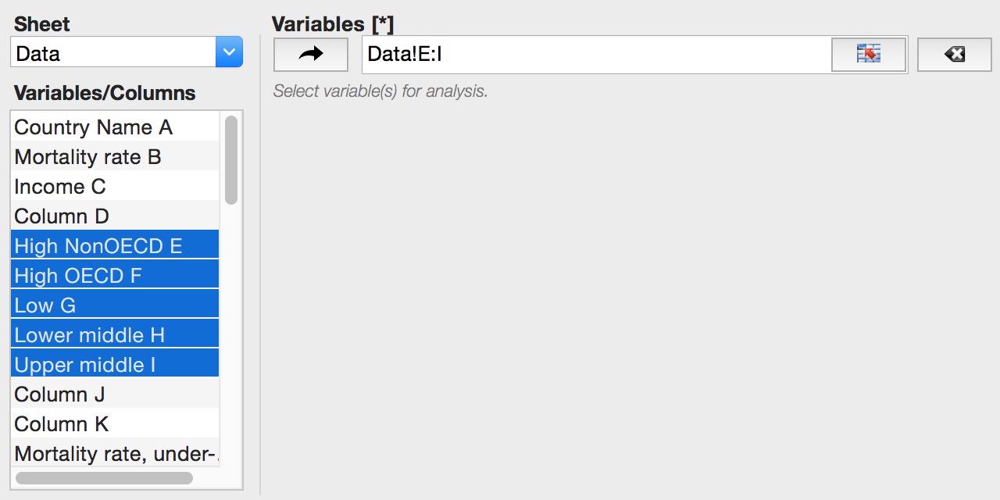
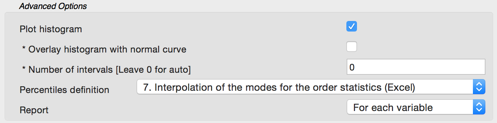
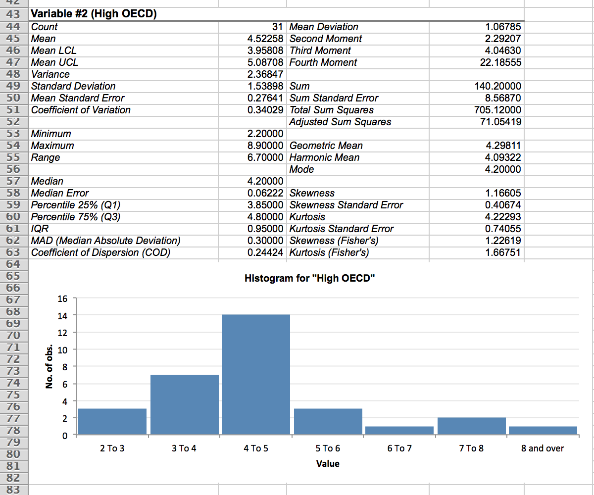
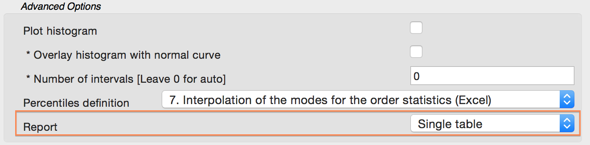
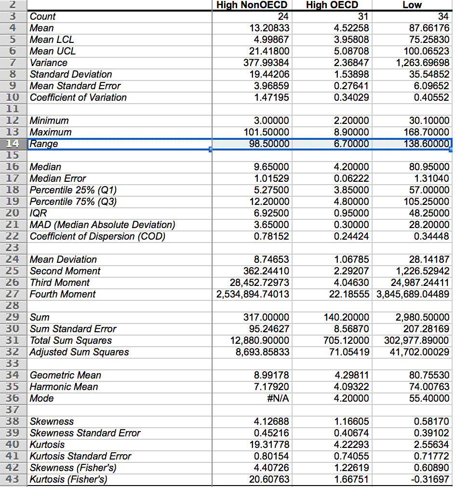

class: inverse layout: true --- #Descriptive Statistics ### <br/><br/> See Also <a href="tutorial_analysis_basic_statistics_descriptive_statistics_group_variable.html"><i class="fa fa-youtube-play" aria-hidden="true"></i>`Descriptive Statistics with group variable`</a> .footer[ .half-col[ <a href="analysis_basic_statistics_descriptive_statistics.html"><i class="fa fa-book" aria-hidden="true"></i> Return to the manual</a> ] .half-col[ Click or tap to continue ] ] --- ##Descriptive Statistics This command displays univariate summary statistics for selected variables. Simple summaries describe the central tendency (mean, median, and mode), dispersion (range, quartiles, variance and standard deviation) and the distribution shape (skewness and kurtosis) of a variable. ###Options `Descriptive Statistics` command options allow you to: * select default percentile calculation method (see the manual), * plot histogram for each variable, * change default report layout. --- .left-column[ ## Data Input Separate table for each variable ] .right-column[ - Open the <a href="data/Stacked and unstacked data.xlsx" target="_blank">`Stacked and unstacked data`</a> workbook. <!-- use target="_blank" only when the link is for data or tutorial on how to use tutorial --> <a href="slide_opendatasetexample.html" target="_blank"> .smaller[ <i class="fa fa-youtube-play" aria-hidden="true"></i> How to open a dataset with example. ] </a> - Run the command: > .code-grey[Statistics→] `Basic Statistics→Descriptive Statistics ` - Select the `High NonOECD – Upper middle` (`E–I`) columns as `Variables`. ><p></p> ] --- .left-column[ ## Data Input Separate table for each variable # Options ] .right-column[ - Click the `Reset Options` button to restore the default options values. - Under the `Advanced Options`: - Check the `Plot Histogram` option. - Select the `For each variable` value for the `Report` option. ><p></p> - Click the `OK` button to get the Descriptive Statistics report. ] --- .left-column[ ## Results Separate table for each variable ] .right-column[ Table with various statistics and a separate histogram are produced for each input variable. ><p></p> ] --- ## Single Table If you have many variables, the report can be very long and ... to compare. So you may find useful to use the single table report mode. A single table report also makes it easier to compare variables side-by-side. --- .left-column[ ## Data Input Single table ] .right-column[ - Activate the `Data` worksheet in the <a href="data/Stacked and unstacked data.xlsx" target="_blank">`Stacked and unstacked data`</a> workbook. - Run the command: > ` Statistics→Basic Statistics→Descriptive Statistics ` - Select the `High NonOECD – Upper middle` (`E–I`) columns as `Variables`. - Under the `Advanced Options`: - .bg-warning[ Select the `Single Table` value for the `Report` option.] ><p></p> - Click the `OK` button to get the Descriptive Statistics report. ] --- .left-column[ ## Results Single table ] .right-column[ In a single table report columns are variables, rows are statistics. The first column is frozen, so you can scroll columns to see statistics for all the variables. ><p></p> ] --- # Thanks for watching! > <a href="analysis_basic_statistics_descriptive_statistics.html"><i class="fa fa-book" aria-hidden="true"></i> Return to the manual</a> > <a href="javascript: slideshow.gotoFirstSlide();"><i class="fa fa-repeat" aria-hidden="true"></i> Repeat the slideshow</a> Related topics: > <a href="tutorial_analysis_basic_statistics_descriptive_statistics_group_variable.html"><i class="fa fa-youtube-play" aria-hidden="true"></i>`Descriptive Statistics with group variable`</a> Still have questions? > <a href="https://www.analystsoft.com/en/contact/"> <i class="fa fa-envelope" aria-hidden="true"></i> Contact us</a>